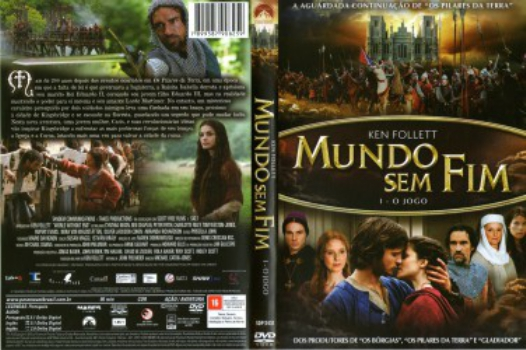

Mundo Sem Fim - Temporada 1 (2012)


Avaliação (TMDb):


6.9/10 (61 votos)
Avaliação (Usuário):
País:Germany, 45 minutos
Idiomas falados:Inglês, Português
Gênero(s):Drama,
Diretor(s):Michael Caton-Jones
Codec:MPEG-2 (DVD)
Número: 2223
Sinopse:
Mundo Sem Fim é uma minisérie de TV baseada no romance de mesmo nome de Ken Follett. É uma sequência à minisérie Pilares da Terra, de 2010, também baseada em um romance de Ken Follett.Passada 150 anos após Pilares da Terra, a série conta eventos de Kingsbridge no contexto da Guerra dos Cem Anos.
Elenco:
Oliver Maltman, David Bradley, Ben Chaplin, Charlotte Riley, Cynthia Nixon, Carlo Rota, Rupert Evans, Nora Waldstätten, Miranda Richardson, Kostja Ullmann
Tipo de mídia: DVD5,
Legendas: Português
Alugado: Não
Tela: 2.55:1